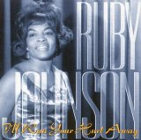

Ruby Johnson
Ruby Johnson was an American soul singer, best known for her recordings on the Volt label in the late 1960s.
Complete Discography & Tracklists (2)
2009 I'll Run Your Hurt Away 🎵 20 Tracks
✨ Similar R&B / Soul Artists